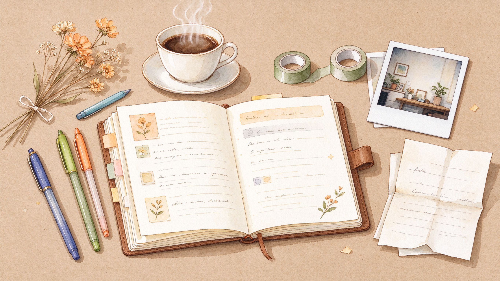
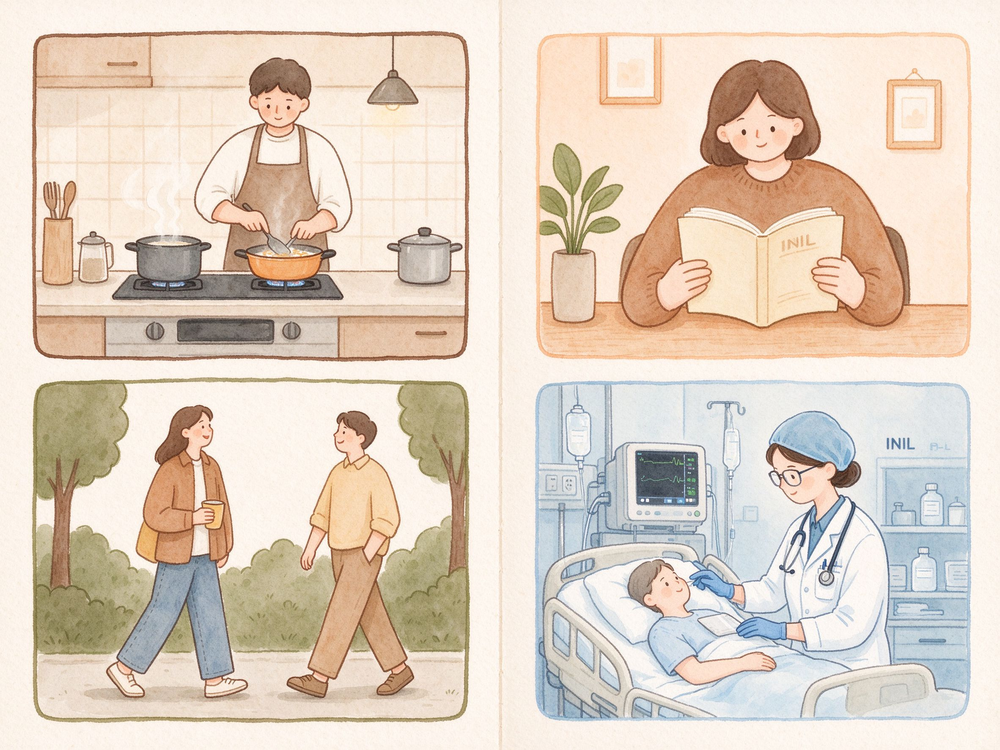

一个想转行运营的医学生
美的布道者 · 生活家
→ 翻开看看
这是一本关于我的手账。
左右翻页，慢慢读。
读完你就知道怎么跟我相处了。
一名护理专业的医学生，目前在 ICU 实习中。
虽然穿着白大褂，但心里还住着一个想做互联网运营、市场营销和 AI Agent 的灵魂。
我相信美是可以被科普的，生活是可以被认真对待的。
受够了千篇一律的古镇古街，希望通过 GitHub 项目做基础美学科普。
护理专业，ICU 实习，见过凌晨的监护仪。
做饭、阅读、和朋友聊天散步，就觉得很幸福。
边讨论边推进，不断迭代。
不喜欢一个人闷头想，喜欢在对话中碰撞出新的火花。
第一步：从基本要素拆解，类似马克思原理。
第二步：逆向思维，站在用户角度想——如果我是用户，怎么更方便、快捷、丝滑？
这时候你可以：不用讲大道理，陪我聊聊天就已经是很大的帮助了。
做选择最看重 意义感 和 成长性
跟这样的人合作，会觉得"啊，真舒服！"
虽然我比较内向，但如果有人主动找我，我会敞开聊的。

从 GitHub 精选的几个项目
面向大众的互动色彩美学科普项目
面向大众的开源互动字体图谱，观察中文与英文字形如何改变语气、节奏与阅读感受
像素游戏、沟通训练器、明信片等 HTML 小项目集合（含金字塔沟通训练）
现在你知道怎么跟我相处了吧？
欢迎来找我聊天 :)
美的布道者 · 医学生 · 生活家
github.com/tom61-bl
2026 · 用手账的方式记录自己